Click the control panel button…

…and make sure that the samplerate is 48000hz (48khz), otherwise you will not be able to record.
This part of the guide will show you how to record Audio from the "Line In" or "Mic" ports on your soundcard, using Logic as an example.
Note: This procedure will be different for each ASIO host sequencer, if you know enough about the sequencer you have, read this section and try to setup your sequencer. If you cannot do this search the kX Forums for an answer.
Certain Soundblaster Live 5.1 Models, SB0060 & SB010x, have ASIO mapping errors, ie the ASIO inputs on the epilog in the DSP do not match up with the ASIO inputs in the host, and as I have one of these cards, I will show you the steps on how to bypass this, but for users of different cards, those steps will be marked with a "*" and are optional.
his installation was carried out on Windows XP Professional with a custome theme, so don't be alarmed if the message boxes look a little wierd or some don't pop up.
Lets open up the AC-97 Page
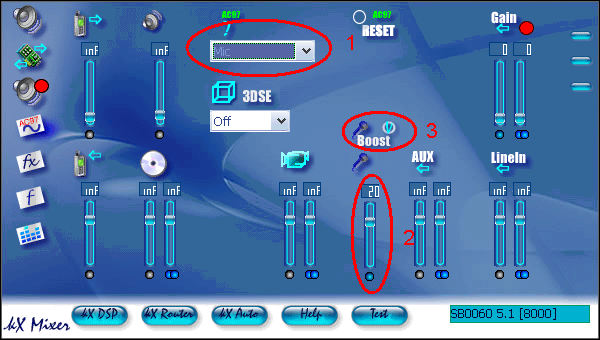
This guide will focus on recording from the Mic(2), if you need to record from
Line In, substitute "Line In" in the "Record From" dropdown menu (1)
Don't forget to unmute Line In if you are using it
Now go to the Ins & Outs Page
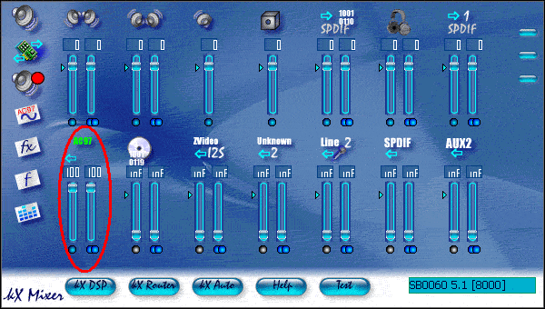
Unmute
and raise the level of the AC-97 Slider
Open up the DSP window.
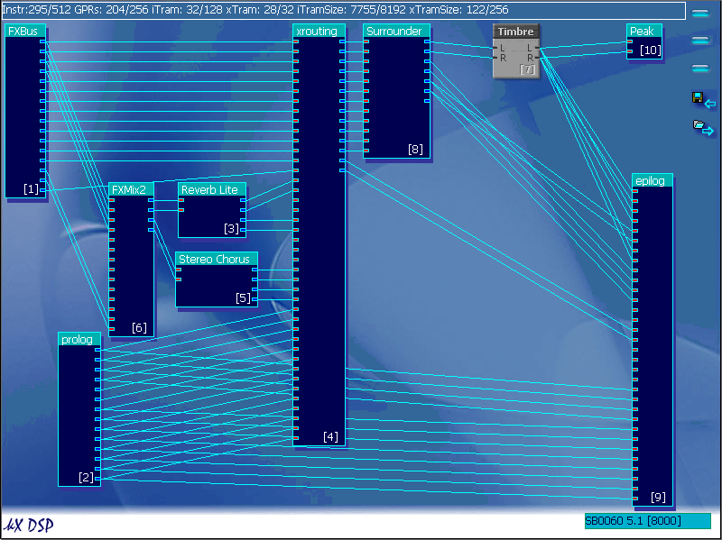
You can see that all prolog inputs are also routed to ASIO channels, but we
need to know which channels we are using.
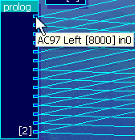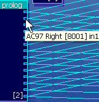
The AC-97 Channels route to…
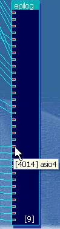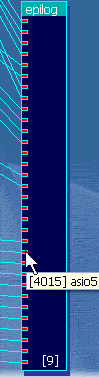
ASIO 4/5 In the epilog.
Note: In some ASIO hosts, ASIO inputs 4/5 may be called 5/6 due to the count starting from 1 instead of 0 as is the case with kX.
Connect your microphone or line in source (such as a synthesizer) to the correct jack. See here for details on how to do this if you do not know how.
Now it is time to load your ASIO host program. I will use Logic
version 5.5.1
Note: This procedure will be different for each ASIO host sequencer, if you
know enough about the sequencer you have, read this section and try to setup
your sequencer. If you cannot do this search the kX
Forums for an answer.
In the Audio Driver setup window
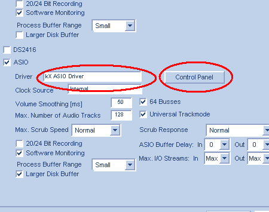
Make sure that you ASIO device is kX ASIO Driver and that it
is active.
Click the control panel button…
…and make sure that the samplerate is 48000hz (48khz), otherwise you will not
be able to record.
Open the track mixer…
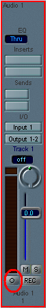->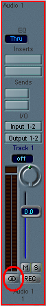
Select the first audio track and if you are using a stereo line in source,
set the audio channel to Stereo by clicking the Stereo/Mono switch.
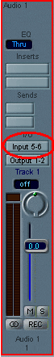
Change the input to input 5/6
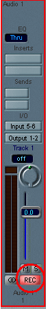
And press the "REC" button.
If you cannot see level in the peak metre when speaking into the Mic or sending audio to the Line In, check whether the kX Router and DSP are correct.
*Or change inputs until you find level in the peak metre
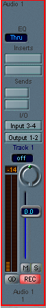
Now you can record using the Transport
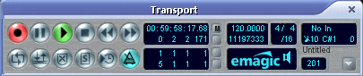
Top Index